Fresatura CNC
Lavorazioni a 3 assi con controllo numerico gestito da CAD/CAM, per geometrie complesse e tolleranze strette, ripetibili su ogni pezzo della serie.
Officina meccanica conto terzi · Curtatone (MN) · dal 1964
Fresatura CNC, tornitura e prototipi in alluminio, ottone, vari acciai e inox. Dal pezzo singolo alla piccola serie, lavoriamo su misura per la tua azienda.
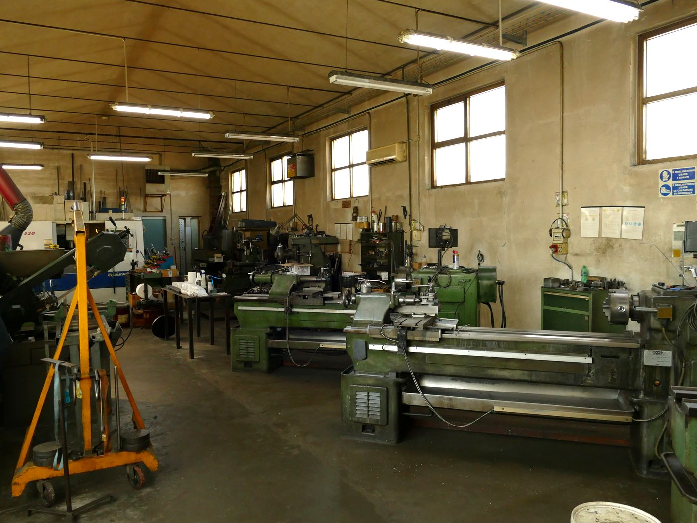
Chi siamo
Bovi Tiziano Torneria lavora per conto terzi dal 1964 a Curtatone, in provincia di Mantova. In oltre sessant'anni abbiamo affiancato aziende di ogni dimensione nella realizzazione di componenti meccanici di precisione, dal singolo prototipo alla piccola serie.
Uniamo macchinari a controllo numerico a torni e trapani tradizionali, per garantire flessibilità su qualsiasi tipo di commessa: pezzi unici, ricambi difficili da reperire, piccole serie ripetute nel tempo.
Lavorazioni
Dalla fresatura CNC al pezzo singolo su tornio tradizionale: troviamo la lavorazione giusta per ogni esigenza.
Lavorazioni a 3 assi con controllo numerico gestito da CAD/CAM, per geometrie complesse e tolleranze strette, ripetibili su ogni pezzo della serie.
Realizzazione di prototipi in alluminio, ottone, diversi tipi di acciaio e altri materiali, dal disegno tecnico al pezzo finito.
Da un singolo pezzo fino a 500 unità per commessa, con accurata precisione dimensionale su tutto il lotto.
Componenti e ricambi meccanici su misura per le macchine del settore packaging, anche fuori produzione o difficili da reperire.
L'officina in azione
Utensili preparati e attrezzaggi pronti a bordo macchina: ogni pezzo viene lavorato e controllato con la stessa cura, dal primo all'ultimo.
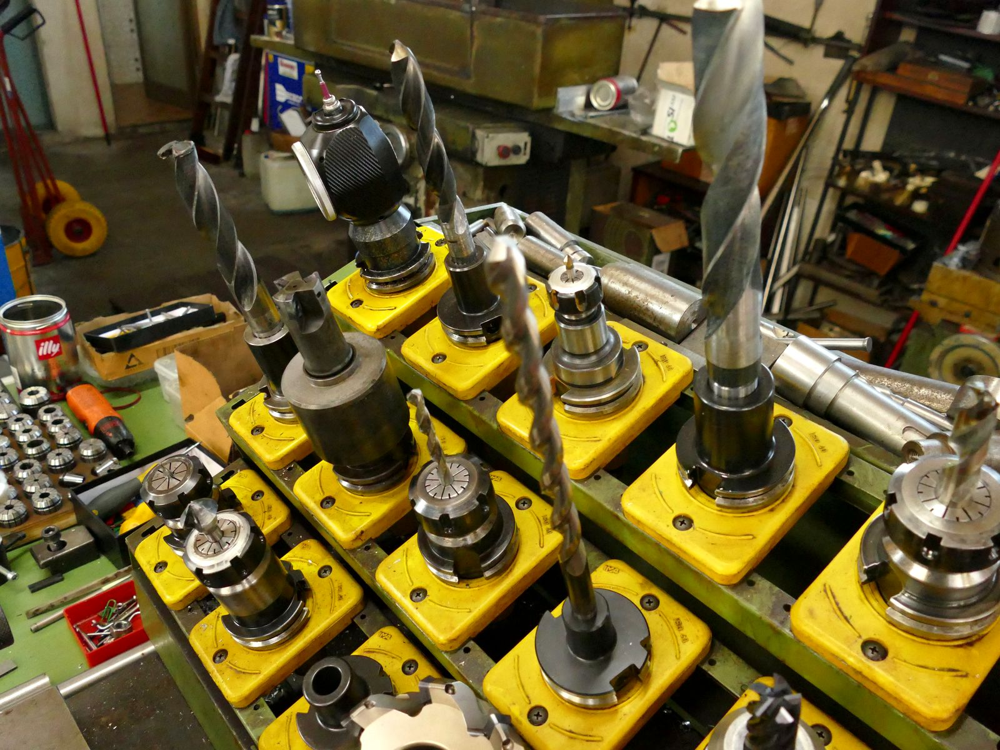
Macchinari
Macchinari a controllo numerico e tradizionali, mantenuti e calibrati per garantire precisione costante.
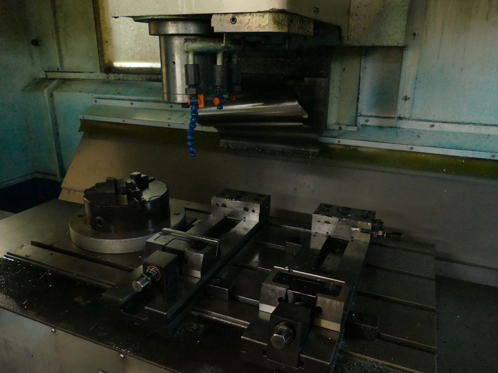
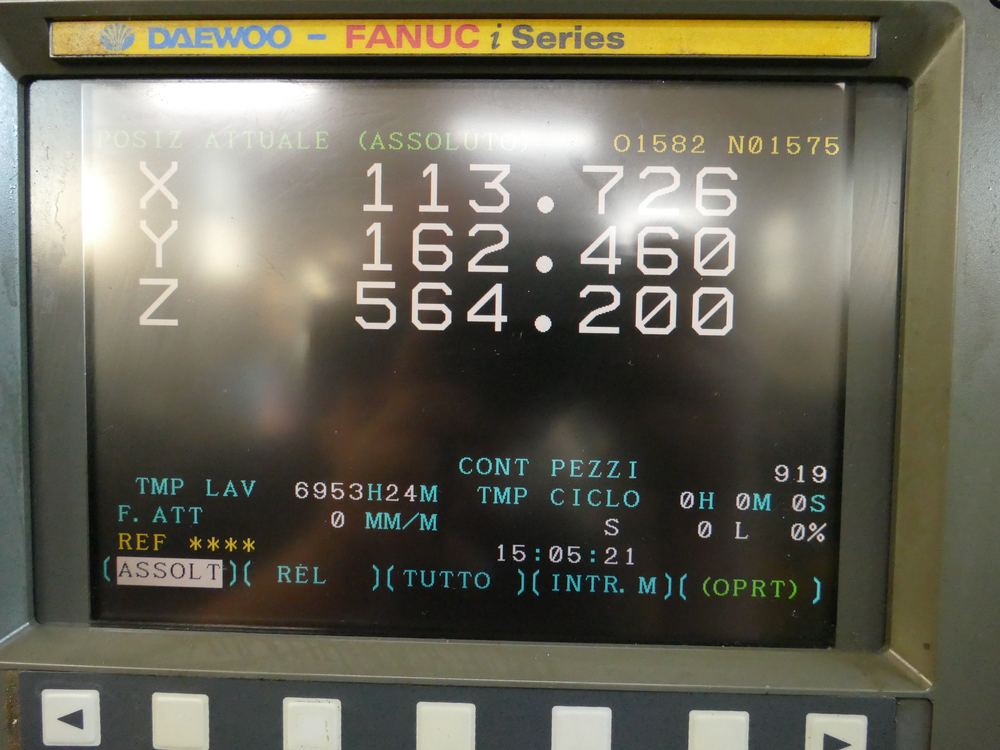
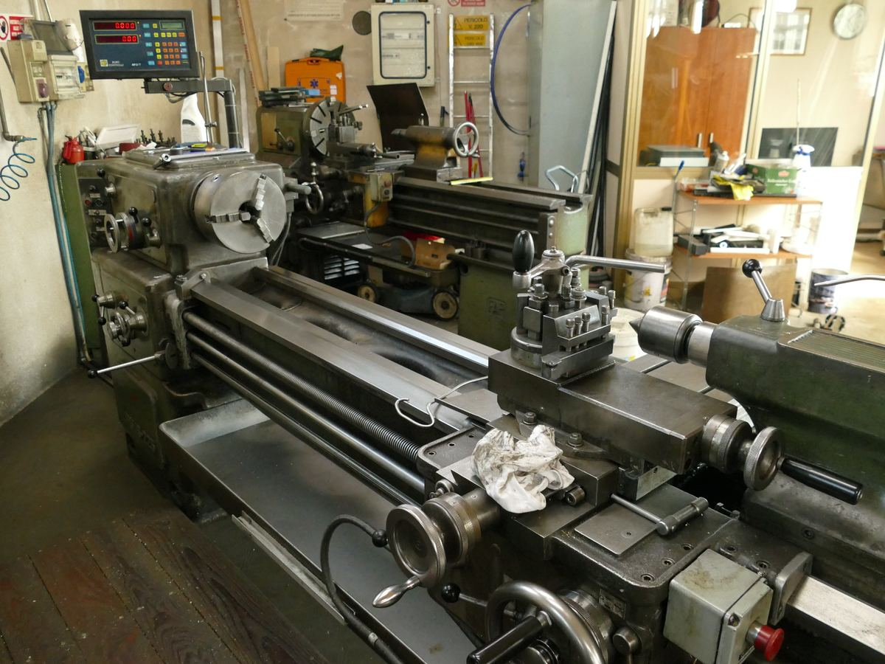
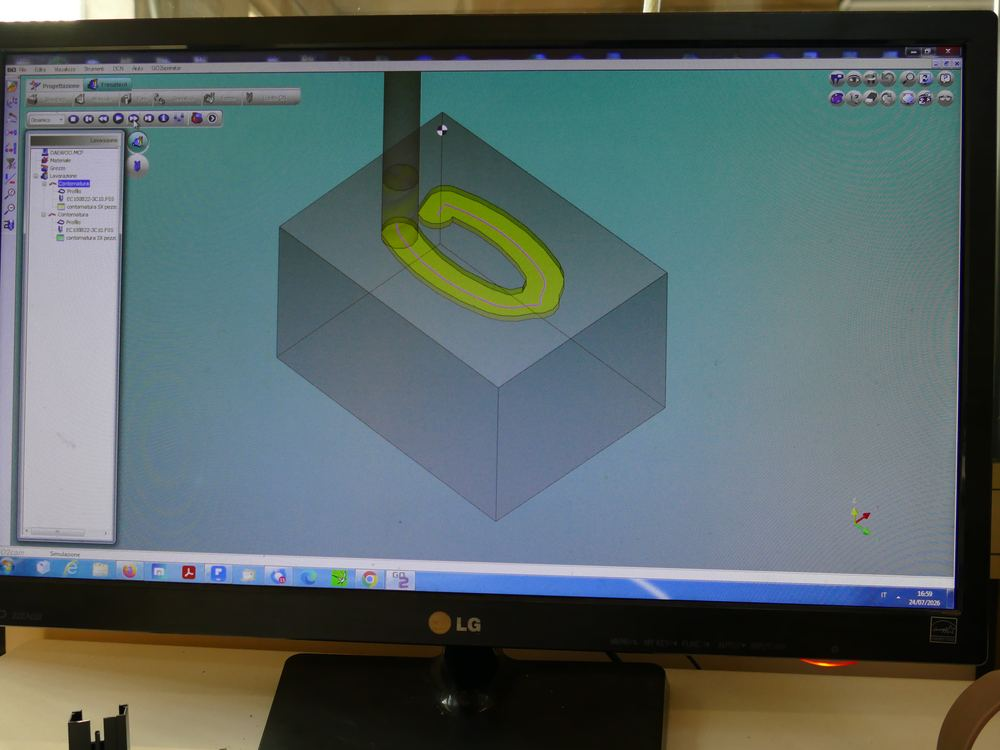
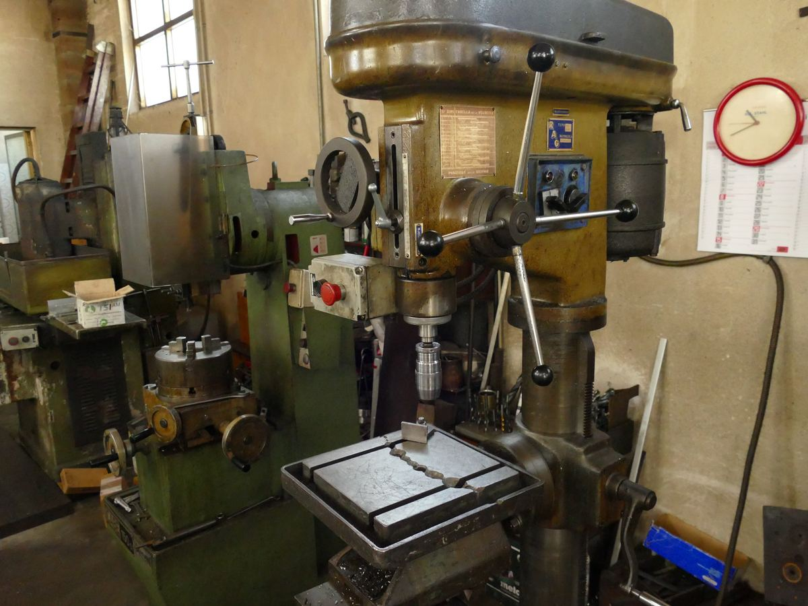
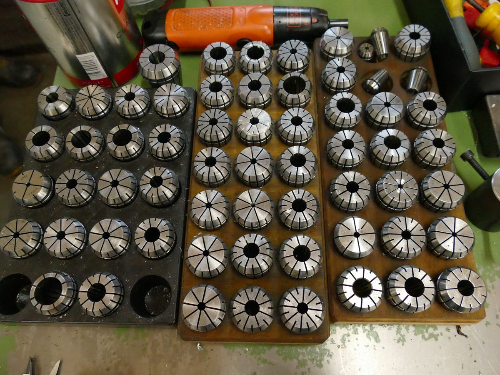
Controllo qualità
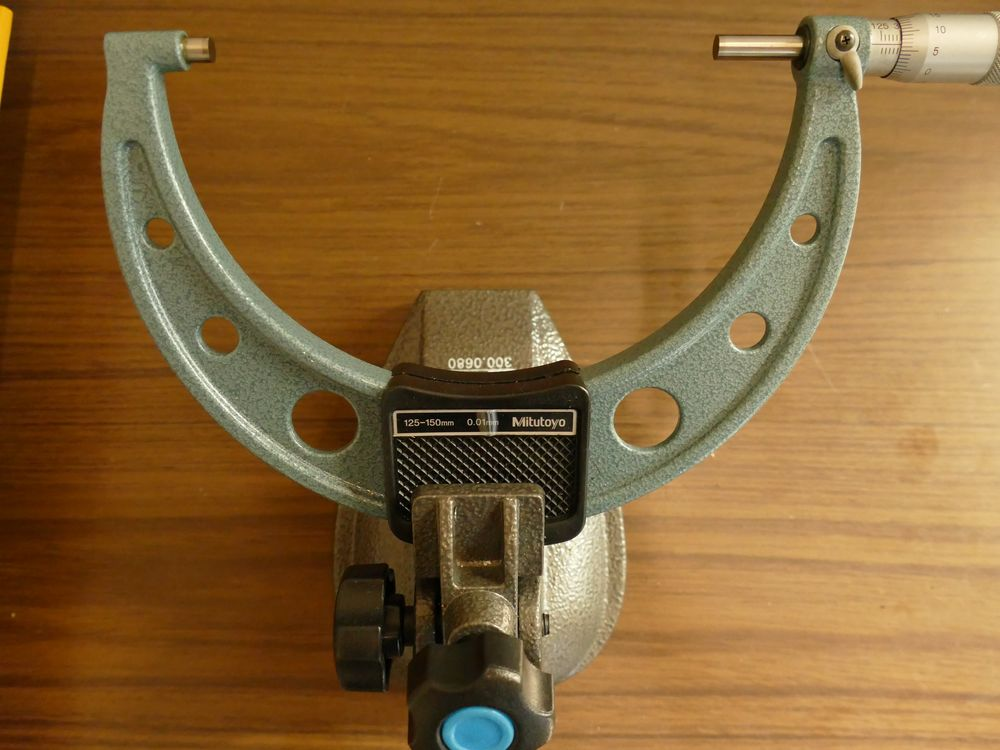
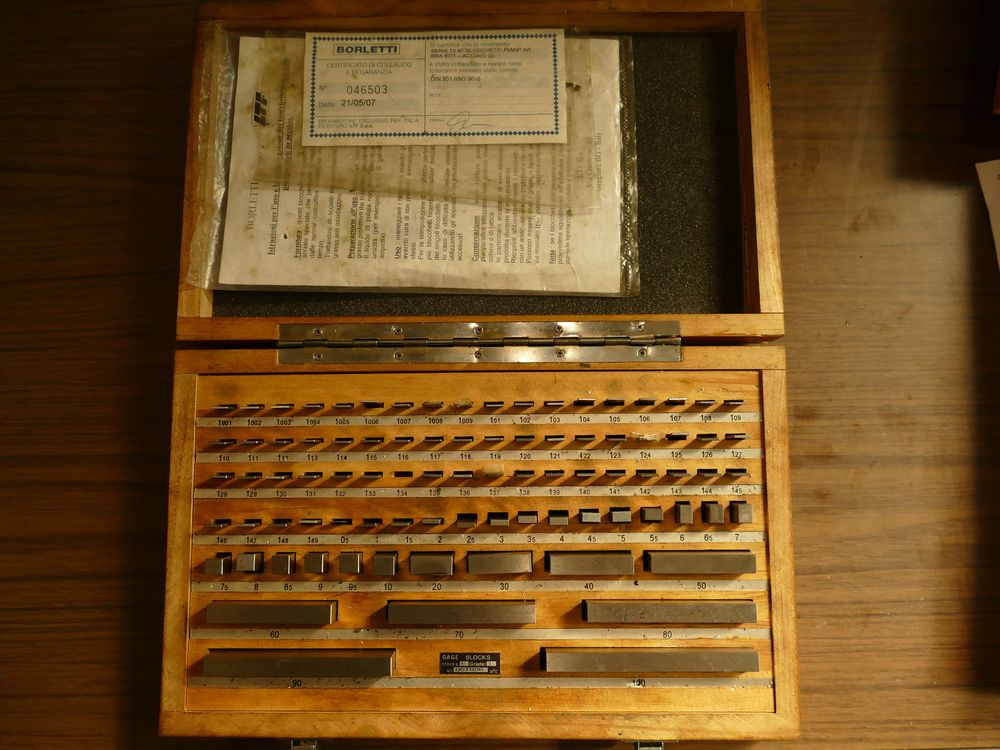
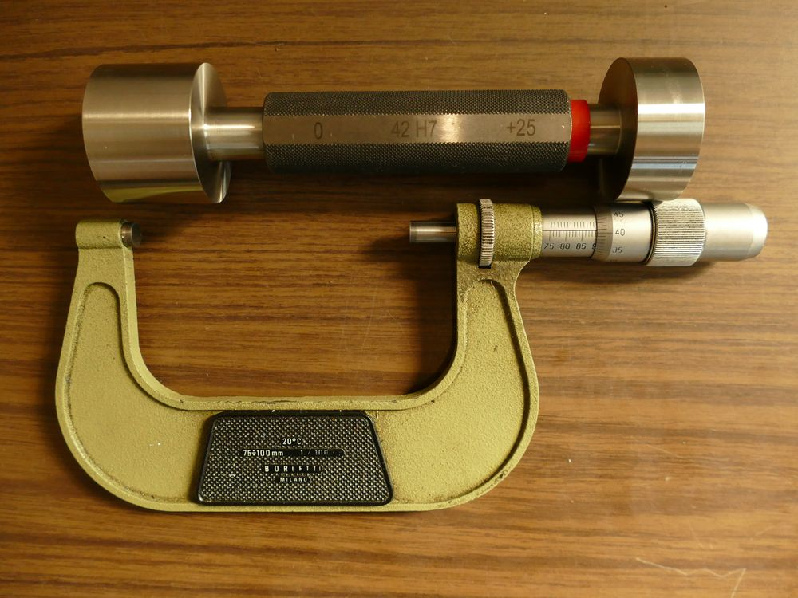
Galleria
Una selezione di componenti prodotti su disegno del cliente: acciaio, ottone e alluminio lavorati con tolleranze strette.
Contatti
Mandaci un disegno o descrivici la lavorazione che ti serve: ti rispondiamo con disponibilità e un preventivo indicativo.